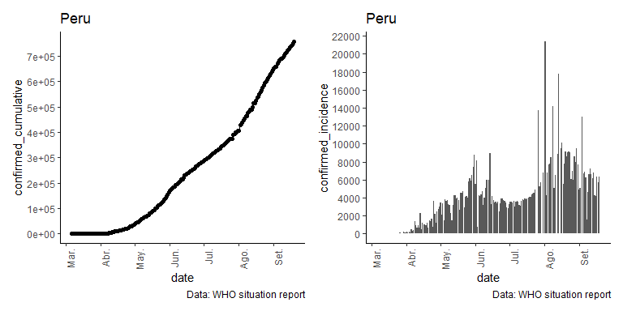
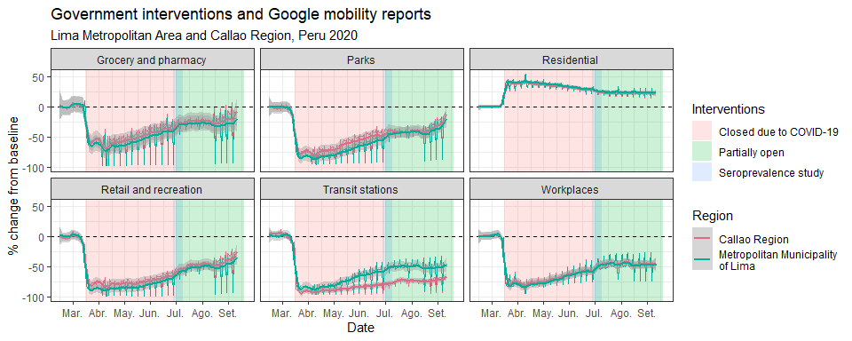

The goal of covid19viz is to access and summarize WHO sitreps for covid-19 in simple graphics.
This package works using two data repositories:
digitalized WHO sitreps by Fabienne Krauer available in fkrauer/COVID-19.
Johns Hopkins University (JHU CSSE) available in CSSEGISandData/COVID-19.
Additionally, it imports external data sources like:
Google Mobility Reports. View.
ACAPS data on #COVID19 Government Measures Dataset. View.
UNESCO COVID-19 Impact on Education. View.
Quick Examples
Import and visualize JHU collection
library(covid19viz)
library(tidyverse)
#import all data at once
jhu_sitrep_peru <- jhu_sitrep_all_sources(country_region="Peru")
jhu_sitrep_peru
#> # A tibble: 3 x 4
#> country_region source data_filter sum_data
#> <chr> <chr> <list> <dbl>
#> 1 Peru confirmed <tibble [242 x 7]> 756412
#> 2 Peru deaths <tibble [242 x 7]> 31283
#> 3 Peru recovered <tibble [242 x 7]> 594513
#transform to tidy format
jhu_sitrep_peru %>%
jhu_sitrep_all_sources_tidy() %>%
arrange(desc(confirmed_cumulative)) %>%
glimpse()
#> Rows: 242
#> Columns: 8
#> $ country_region <chr> "Peru", "Peru", "Peru", "Peru", "Peru", "...
#> $ date <date> 2020-09-19, 2020-09-18, 2020-09-17, 2020...
#> $ confirmed_cumulative <dbl> 756412, 750098, 744400, 738020, 733860, 7...
#> $ deaths_cumulative <dbl> 31283, 31146, 31051, 30927, 30812, 30710,...
#> $ recovered_cumulative <dbl> 594513, 594513, 594513, 580753, 573364, 5...
#> $ confirmed_incidence <dbl> 6314, 5698, 6380, 4160, 4241, 6787, 6162,...
#> $ deaths_incidence <dbl> 137, 95, 124, 115, 102, 184, 56, 126, 108...
#> $ recovered_incidence <dbl> 0, 0, 13760, 7389, 6568, 7475, 0, 14576, ...
Import more external data sources
- Google Mobility Reports. View.
- ACAPS data on #COVID19 Government Measures Dataset. View.
- UNESCO COVID-19 Impact on Education. View.
library(covid19viz)
library(tidyverse)
# google mobility reports
# global
read_google_global() %>% glimpse()
#> Rows: 2,441,517
#> Columns: 14
#> $ country_region_code <chr> "AE", "AE", "AE", ...
#> $ country_region <chr> "United Arab Emira...
#> $ sub_region_1 <chr> NA, NA, NA, NA, NA...
#> $ sub_region_2 <lgl> NA, NA, NA, NA, NA...
#> $ metro_area <lgl> NA, NA, NA, NA, NA...
#> $ iso_3166_2_code <chr> NA, NA, NA, NA, NA...
#> $ census_fips_code <lgl> NA, NA, NA, NA, NA...
#> $ date <date> 2020-02-15, 2020-...
#> $ retail_and_recreation_percent_change_from_baseline <dbl> 0, 1, -1, -2, -2, ...
#> $ grocery_and_pharmacy_percent_change_from_baseline <dbl> 4, 4, 1, 1, 0, 1, ...
#> $ parks_percent_change_from_baseline <dbl> 5, 4, 5, 5, 4, 6, ...
#> $ transit_stations_percent_change_from_baseline <dbl> 0, 1, 1, 0, -1, 1,...
#> $ workplaces_percent_change_from_baseline <dbl> 2, 2, 2, 2, 2, 1, ...
#> $ residential_percent_change_from_baseline <dbl> 1, 1, 1, 1, 1, 1, ...
# regional
# first: select country ISO
read_google_region_list()
#> # A tibble: 135 x 4
#> country_iso Name Length Date
#> <chr> <chr> <dbl> <dttm>
#> 1 AE 2020_AE_Region_Mobility_Report.csv 121354 2020-09-13 15:27:00
#> 2 AF 2020_AF_Region_Mobility_Report.csv 20553 2020-09-13 15:27:00
#> 3 AG 2020_AG_Region_Mobility_Report.csv 57484 2020-09-13 15:27:00
#> 4 AO 2020_AO_Region_Mobility_Report.csv 58954 2020-09-13 15:27:00
#> 5 AR 2020_AR_Region_Mobility_Report.csv 6932241 2020-09-13 15:27:00
#> 6 AT 2020_AT_Region_Mobility_Report.csv 1402047 2020-09-13 15:27:00
#> 7 AU 2020_AU_Region_Mobility_Report.csv 4329094 2020-09-13 15:27:00
#> 8 AW 2020_AW_Region_Mobility_Report.csv 9967 2020-09-13 15:27:00
# second: read specific country data
peru <- read_google_region_country(country_iso = "PE")
peru %>% glimpse()
#> Rows: 28,194
#> Columns: 14
#> $ country_region_code <chr> "PE", "PE", "PE", ...
#> $ country_region <chr> "Peru", "Peru", "P...
#> $ sub_region_1 <chr> NA, NA, NA, NA, NA...
#> $ sub_region_2 <chr> NA, NA, NA, NA, NA...
#> $ metro_area <lgl> NA, NA, NA, NA, NA...
#> $ iso_3166_2_code <chr> NA, NA, NA, NA, NA...
#> $ census_fips_code <lgl> NA, NA, NA, NA, NA...
#> $ date <date> 2020-02-15, 2020-...
#> $ retail_and_recreation_percent_change_from_baseline <dbl> 4, 1, 0, 0, 0, 0, ...
#> $ grocery_and_pharmacy_percent_change_from_baseline <dbl> 1, 0, 1, 0, -1, -1...
#> $ parks_percent_change_from_baseline <dbl> 3, -2, 1, 0, 0, -1...
#> $ transit_stations_percent_change_from_baseline <dbl> 3, 2, 2, 1, 0, 3, ...
#> $ workplaces_percent_change_from_baseline <dbl> 0, 0, 1, 1, 1, 0, ...
#> $ residential_percent_change_from_baseline <dbl> -1, 0, 0, 0, 1, 0,...
peru %>% count(sub_region_1)
#> # A tibble: 27 x 2
#> sub_region_1 n
#> <chr> <int>
#> 1 Amazonas 1050
#> 2 Ancash 1871
#> 3 Apurimac 816
#> 4 Arequipa 1470
#> 5 Ayacucho 1050
#> 6 Cajamarca 1850
#> 7 Callao Region 210
#> 8 Cusco 1668
#> 9 Huancavelica 630
#> 10 Huanuco 630
#> # ... with 17 more rows
# acaps data
read_acaps_governments() %>% glimpse()
#> Rows: 193
#> Columns: 8
#> $ Country_name <chr> "Afghanistan", "Albania", "Algeria", "Angola",...
#> $ ISO3 <chr> "AFG", "ALB", "DZA", "AGO", "ATG", "ARG", "ARM...
#> $ REGION <chr> "Asia", "Europe", "Africa", "Africa", "America...
#> $ Measure_taxonomy <chr> "Schools closure ", "Border checks ", "Border ...
#> $ Measure_Category <chr> "Social distancing", "Movement restrictions", ...
#> $ SOURCE_TYPE <chr> "Government", "Media", "UN", "Other organisati...
#> $ Enforcement_taxonomy <chr> "Fines", "Arrest/Detention", "Deportation", "R...
#> $ Log_type <chr> "Introduction / extension of measures", "Phase...
# unesco education data
read_unesco_education() %>% glimpse()
#> Rows: 41,714
#> Columns: 5
#> $ Date <chr> "17/02/2020", "17/02/2020", "18/02/2020", "...
#> $ ISO <chr> "CHN", "MNG", "CHN", "MNG", "CHN", "MNG", "...
#> $ Country <chr> "China", "Mongolia", "China", "Mongolia", "...
#> $ Status <chr> "Partially open", "Closed due to COVID-19",...
#> $ Note <lgl> NA, NA, NA, NA, NA, NA, NA, NA, NA, NA, NA,...